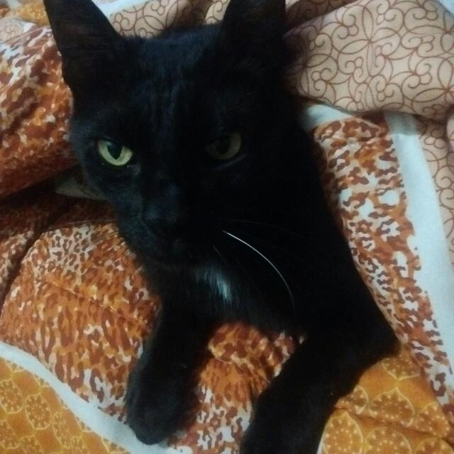
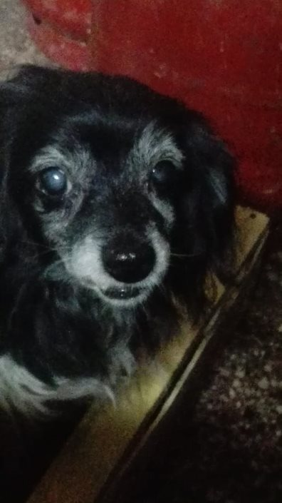
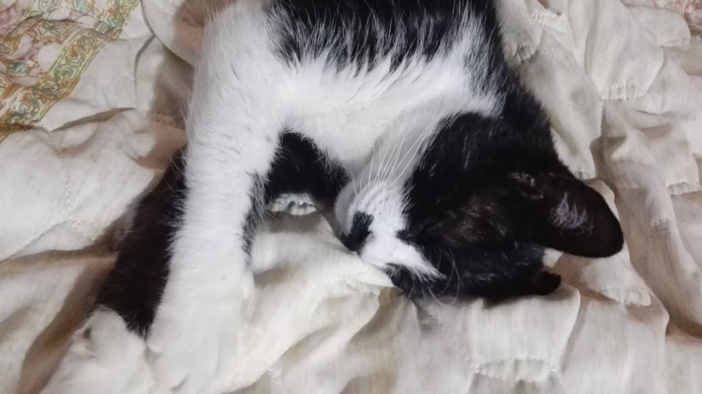
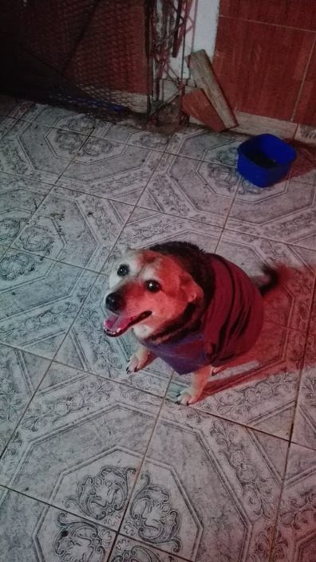
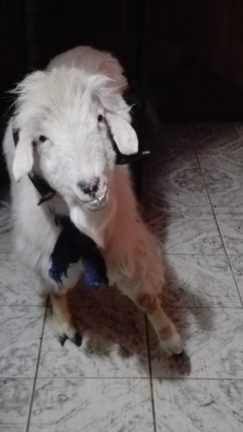

Romeo

He is Romeo, today is't between us and i love him so much, so i
maked a animated wallpaper in "WALLPAPER ENGINE" for help me in my
day to day.
We will never forget you❤️.
💥WALLPAPER💥
Julieta

She is a dog who I love, once she got us up at night, when my house was burning down from an electrical failure..
Pancho

He is much older than I am at the moment 38 years old compared to my almost 20s, he also has one of the strongest lungs I have ever heard screaming.... but he is loved.
Miki

He is practically my son, most of the time he spends with me and accompanies me to almost every corner of my house.
Laika

She is one of the most affectionate and playful dogs I ever had as well as curious and energetic. Wherever you look at her she is always smiling.
Camilo

He is a goat which came to us when he was just 11 days old, after his mother died because of some dogs, now he is about 10 years old.